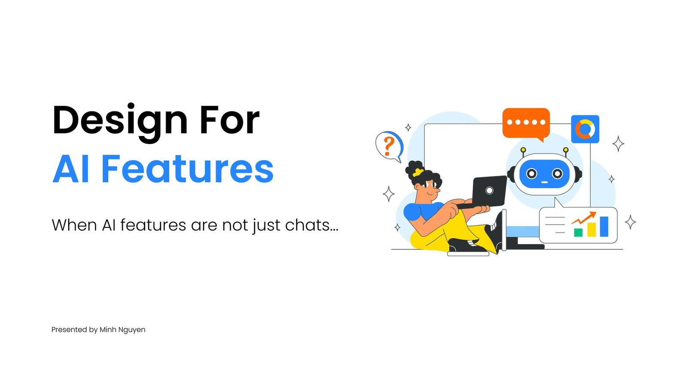
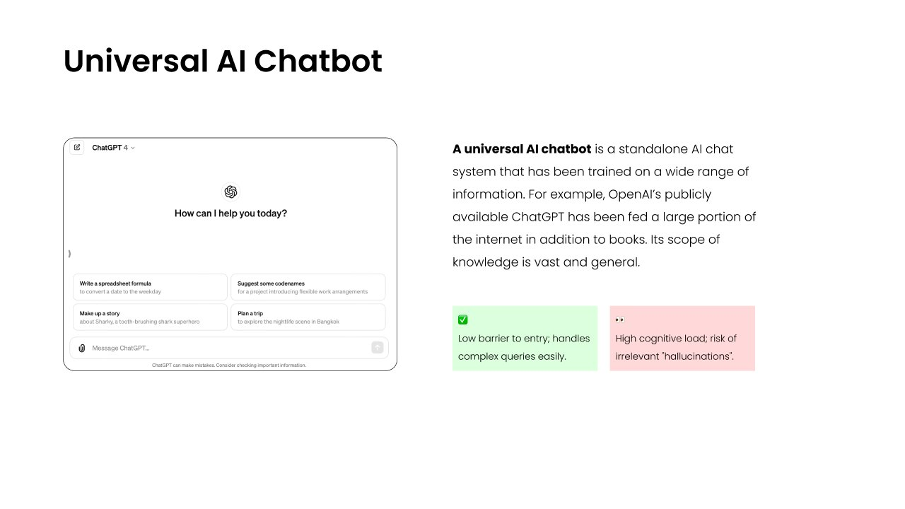
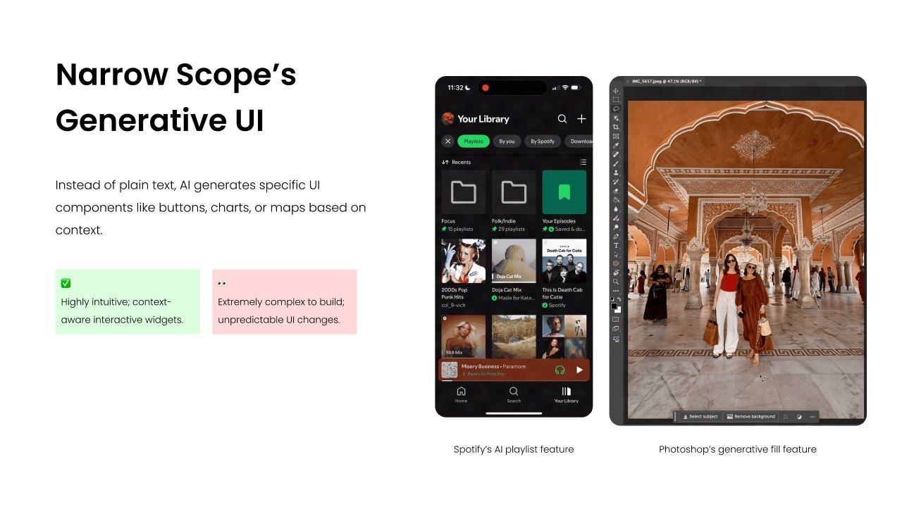
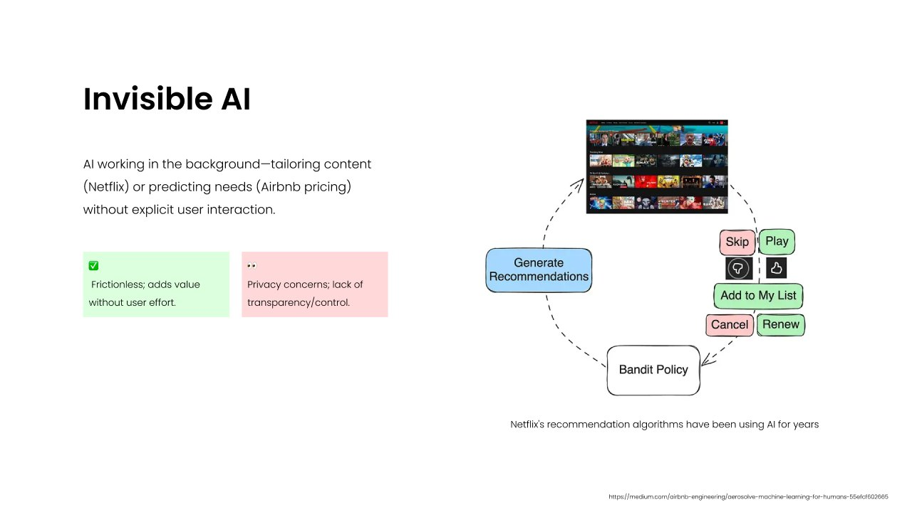
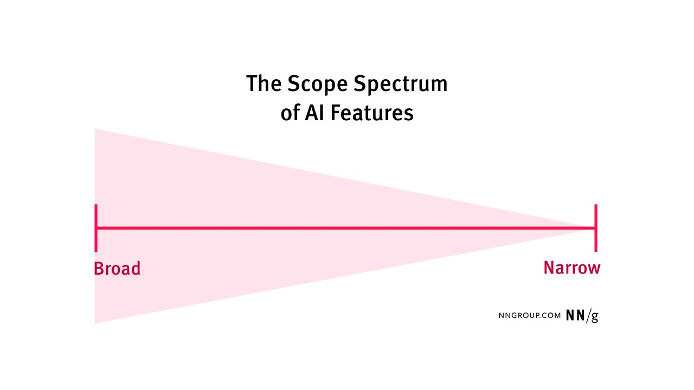
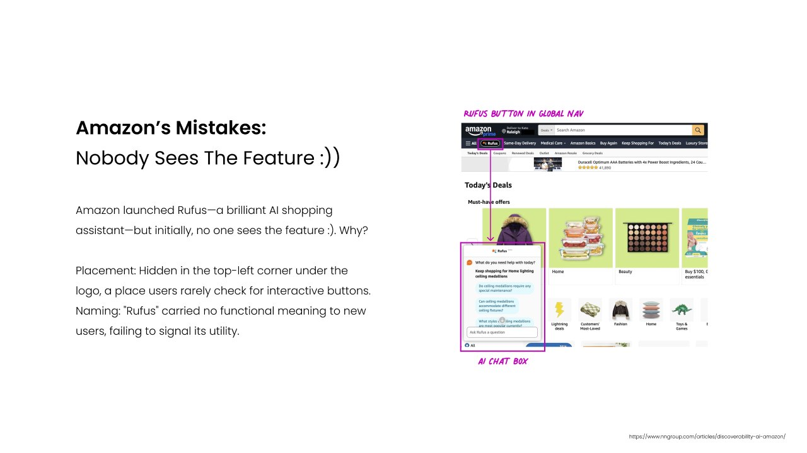
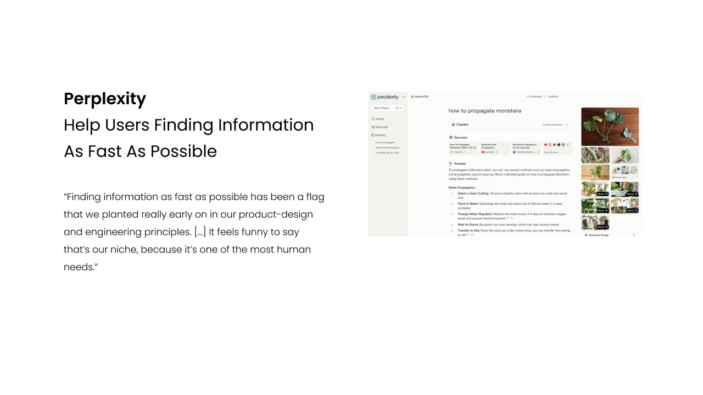

“Can you just add AI to the app?” If you are a designer in 2026, you have heard this one. It is an exciting time and a high-pressure one, and the easy answer is to drop a chat bubble into every corner of the product.
But does that actually solve what users need? Ask people to name an AI feature they use today and most will picture a chat window. The real range is much wider. In this talk I walked through that range, a few lessons from big products, and the questions I now ask before designing anything with AI.
Six common patterns
1. Universal AI chatbot
A standalone assistant trained on a huge range of knowledge, like ChatGPT. Its scope is vast and general.

2. Product-specific AI chatbot
An assistant inside one product that knows that product’s content, like the “Ask AI” panel on a help site. Its scope is much narrower.
3. Narrow-scope generative UI
Instead of returning text, AI generates the interface itself: a playlist in Spotify, a generative fill in Photoshop.

4. AI magic bar and smart search
Search grows into a command bar. People “ask” for what they want instead of digging through menus.
5. Invisible AI
AI working quietly in the background: Netflix tailoring what you see, Airbnb suggesting a price. No chat at all.

6. The scope spectrum
Put together, these patterns sit on a line from broad to narrow. The narrower the scope, the more the AI disappears into the product and the less it looks like a chat.

Two lessons from real products
Amazon: nobody saw the feature
Amazon launched Rufus, a genuinely useful AI shopping assistant, and at first almost nobody used it. The button lived in the top-left corner under the logo, a spot people rarely look for actions. And the name “Rufus” told new users nothing about what it does. Great AI, invisible entry point.

Perplexity: speed is the feature
Perplexity’s design leaders talk openly about two ideas I keep coming back to. First, not every product should be a chat, and most don’t benefit from an AI with a personality. Second, their north star is simply helping people find information as fast as possible, one of the most human needs there is. The AI serves that goal; it is not the goal.

Designing with the rules in mind
In Vietnam, the new AI law adds three pillars every designer should know: AI must stay human-centric (people keep authority and final responsibility), AI-generated content must be clearly labeled, and AI systems are classified by risk into high, medium and low. These are design requirements as much as legal ones: labels, review steps and clear ownership all live in the interface.
My checklist before adding AI
- Does it solve a real user need?
- Does it align with our business strategy?
- Does it scale, and leave room to change later?
AI chat is not always the answer. The right AI feature sits where user need, strategy and flexibility overlap.
I closed the talk with a question I’ll leave with you too: what kind of AI feature is your team working on right now, and does it really need to be a chat?